생산자동화산업기사 (2006-09-10 기출문제)
1과목: 기계가공법 및 안전관리
1. 인벌류트 치형을 정확히 가공할 수 있는 방법으로 절삭공구와 공작물이 서로 기어가 회전운동을 할 때에 접촉하는것과 같은 상대운동으로 기어를 절삭하는 방법은?
- 형판에 의한 기어 절삭법
- 지그에 의한 기어 절삭법
- 창성법에 의한 기어 절삭법
- 총형공구에 의한 기어 절삭법
(정답률: 알수없음)

2. 다음 중 구멍의 내면, 곡면, 내접기어, 스플라인 구멍등을 가공할 수 있는 공작 기계로 가장 적합한 것은?
- 슬로터
- 드릴머신
- 플레이터
- 선반
(정답률: 알수없음)
3. 센터리스 연삭기의 장ㆍ단점에 대한 설명으로 옳은 것은?
- 장점: 연삭 여유가 작아도 된다.
- 장점: 대형 중량물을 연삭한다.
- 단점: 긴 축 재료의 연삭이 불가능하다.
- 단점: 연속작업을 할 수 없고, 대량생산에 부적합하다.
(정답률: 알수없음)
4. 공기 마이크로미터의 장점에 대한 설명으로 잘못된 것은?
- 확대율이 매우 크고, 조정도 쉽다.
- 측정력이 작아 무접촉의 측정이 가능하다.
- 반지름이 작은 다른 종류의 측정기로는 불가능한 것을 측정할 수 있다.
- 비교측정기가 아니기 때문에 마스터는 필요없다.
(정답률: 알수없음)
5. 정밀측정에서 아베(Abbe)의 원리를 가장 올바르게 설명한 것은?
- 눈금선의 간격은 일치 되어야 한다.
- 단도기의 지지는 양끝 단면이 평행하도록 한다.
- 표준자와 피측정물은 동일 축선상에 있어야 한다.
- 내측 측정 시는 최대값을 택한다.
(정답률: 알수없음)
6. W, Ti, Ta 등의 경질합금 탄화물 분말에 Co 또는 Ni을 결합제로 소결하여 제조한 절삭 공구의 재료는?
- 탄소 공구강
- 스텔라이트
- 초경 합금
- 시효경화 합금
(정답률: 알수없음)
7. 복식공구대를 선회시켜 테이퍼 가공 시 테이퍼의 큰 지름을 D(mm), 작은 지름을d(mm), 테이퍼의 길이가 L(mm)일 때, 공구대의 선회각 a/2의 값은?
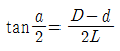
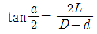
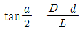
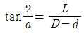
(정답률: 알수없음)
8. 전기도금과 반대 현상을 이용한 가공으로 알루미늄은 거울과 같이 광택있는 가공면을 비교적 쉽게 가공할 수 있는 것은?
- 방전 가공
- 전해연마
- 액체호닝
- 레이저 가공
(정답률: 알수없음)
9. 일반적으로 기계 절삭 가공시 안전 사항으로 틀린 것은?
- 기계에 주유할 때에는 운전상태에서 한다.
- 고장기계는 반드시 표시한다.
- 운전 중 기계에서 이탈하지 않는다.
- 정전 시 스위치를 끈다.
(정답률: 알수없음)
10. 절삭속도 25m/min, 밀링커터의 날수 10, 지름 150mm, 1날 당 이송을 0.2mm로 할 때 테이블의 분당 이송속도는?
- 106.1mm/min
- 210.5mm/min
- 250.7mm/min
- 298.4mm/min
(정답률: 알수없음)
11. 연삭하려는 부품의 형상으로 연삭숫돌을 성형하거나, 성형 연삭으로 인하여 숫돌 형상이 변화된 것을 부품의 형상으로 바르게 고치는 가공은?
- 프레싱
- 트루잉
- 글레이징
- 로우팅
(정답률: 알수없음)
12. 구성 인선(built-up adge)의 방지 대책으로 틀린 것은?
- 절삭깊이를 작게 할 것
- 공구의 윗면 경사각을 크게 할 것
- 공구 인선을 예리하게 할 것
- 절삭속도를 작게 할 것
(정답률: 알수없음)
13. 드릴 작업에서 절삭속도 18m/min, 회전수 115rpm일 때, 드릴의 지름은 얼마인가?
- 35.91mm
- 49.82mm
- 54.73mm
- 68.64mm
(정답률: 알수없음)
14. 롤러 중심거리가 200mm인 사인바로 각도를 측정하고자 할 때 게이지 블록의 높이가 각각 10mm과 110mm이었다면 각도 θ는 얼마인가?
- 15°
- 30°
- 45°
- 60°
(정답률: 알수없음)
15. 연삭숫돌의 결합제와 기호를 짝지은 것이 잘못된 것은?
- 고무 – R
- 셀락 – E
- 비닐 – P/A
- 레지노이드 – L
(정답률: 알수없음)
16. 주철을 저속으로 절삭할 때 나타내는 일반적인 칩의 형태는?
- 전단형
- 경작형
- 균열형
- 유동형
(정답률: 알수없음)
17. 밀링머신에서 일반적으로 할 수 없는 가공은?
- 총형 가공
- 기어 가공
- 널링 가공
- 나선홀 가공
(정답률: 알수없음)
18. 선반의 부품 중 원판 안에 전자석을 설치하고 이것에 전류를 흘려보내면 척은 자화되어 일감을 고정시키는 것은?
- 연동척
- 콜릿척
- 압축공기척
- 마그네틱 척
(정답률: 알수없음)
19. 수가공에서 탭(tap)과 다이스(dies)를 이용하는 작업은?
- 나사깍기작업
- 리머작업
- 스크레이퍼작업
- 금긋기 작업
(정답률: 알수없음)
20. 회전하는 상자속에 가공물, 숫돌입자, 가공액, 콤파운드(compound)등을 함께 넣고 회전시켜 서로 부딪치며 가공되어 매끈한 가공면을 얻는 것은?
- 배럴 가공
- 래핑
- 슈퍼피니싱
- 연삭
(정답률: 알수없음)
2과목: 기계제도 및 기초공학
21. 탱크의 수면 밑 1m인 곳에서 지름 5cm인 구멍을 뚫을 때 유출하는 물의 속도(m/sec)는?
- 0.18
- 1.41
- 4.43
- 19.6
(정답률: 알수없음)
22. 지름이 d인 원형 단면의 단면2차 모멘트를 계산하는 식은?
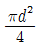
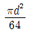
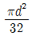
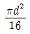
(정답률: 알수없음)
23. 반지름이 6cm이고 중심각이 70°인 부채꼴의 면적은 몇 cm2인가?
- 3π
- 5π
- 7π
- 9π
(정답률: 알수없음)
24. 400[W]/220[V]라고 표기된 전기히터에 220[V]의 전압을 가했을 때 히터에 흐르는 전류는?
- 0.5[A]
- 1[A]
- 1.8[A]
- 2[A]
(정답률: 알수없음)
25. 지름 60cm인 원형 핸들에 10kgf의 힘을 가하여 회전시켰다면 이 때 발생한 토크(kgf-m)는?
- 3
- 4
- 5
- 6
(정답률: 알수없음)
26. 2개의 저항 R1과 R2를 병렬로 접속하면 그 합성 저항은 얼마인가?
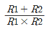
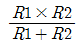
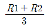
- R1×R2
(정답률: 알수없음)
27. 힘의 3대 요소에 해당되지 않는 것은?
- 작용점
- 크기
- 방향
- 속도
(정답률: 알수없음)
28. 컨베이어 시스템에서 물체가 5분에 9m 이동하였다면 이 컨베이어 시스템의 속도는?
- 1.8m/sec
- 18cm/sec
- 3cm/sec
- 0.3m/sec
(정답률: 알수없음)
29. 다음 중 응력에 대한 설명으로 틀린 것은?
- 단위 면적당 재료의 내부에서 저항하는 힘의 크기를 말한다.
- 응력이 단면에 직각으로 작용할 때 이것을 수직 응력이라 한다.
- 작용하중이 일정할 때 면적이 크면 응력은 커진다.
- 물체에 작용하는 하중과 응력은 비례관계에 있다.
(정답률: 알수없음)
30. 다음 단위에 대한 설명 중 잘못된 것은?
- 저항 → [Ω] → chm
- 콘덴서 → [C] → 패릿
- 주파수 → [Hz] → 헤르쯔
- 압력 → [Pa] → 파스칼
(정답률: 알수없음)
31. “윈도98”에서 시동디스크(부팅디스크)를 만드는 기능은 어디에 있는가?
- 내게 필요한 옵션
- 시스템
- 프로그램 추가/제거
- 디스 플레이
(정답률: 알수없음)
32. Which of the following key strokes is able to ccp/it to the clipboard in WINDOW98?
- Ait+C
- Ctrl+V
- Ctrl+A
- Ctrl+C
(정답률: 알수없음)
33. 도스(MS-DOS)에서 “AAA”라는 디렉토리를 만들 때의 명령은? (단, 현제 디렉토리는 C:W임)
- C:W＞MD AAA
- C:W＞CD AAA
- C:W＞ED AAA
- C:W＞RD AAA
(정답률: 알수없음)
34. “윈도 98”에서 새로운 하드웨어를 장착하고 시스템을 가동시키면 자동으로 하드웨어를 인식하고 실행하는 기능은?
- interrupt 기능
- Auto & play 기능
- Plug & play 기능
- Auto & plug 기능
(정답률: 알수없음)
35. CPU 스케줄링 알고리즘에서 규정시간 또는 시간조각(glice)을 미리 정의하여 CPU 스케줄러가 준비상태 큐에서 정의된 시간만큼 각 프로세스에 CPU를 제공하는 시분할 시스템에 적절한 스케줄링 알고리즘은?
- RR(round-robin)
- FCFS(first-come-first-served)
- SJF(shortest job first)
- SRT(shortest remaining time)
(정답률: 알수없음)
36. 컴퓨터 시스템의 성능을 최적화하기 위하여 사용되는 운영체제의 기능과 거리가 먼 것은?
- 초기설정 기능
- 인터페이스 기능
- 이식성 기능
- 시스템 비보호기능
(정답률: 알수없음)
37. “윈도 98”의 탐색기에서 비연속적인 여러 개의 파일을 선택하는 방법은?
- ＜ctrl＞키를 누른 상태에서 선택하려는 파일들을 왼쪽 마우스 버튼을 클릭하여 선택한다.
- ＜shift＞키를 누른 상태에서 선택하려는 파일들을 왼쪽 마우스 버튼을 클릭하여 선택한다.
- ＜alt＞키를 누른 상태에서 선택하려는 파일들을 오른쪽 마우스 버튼을 클릭하여 선택한다.
- ＜shift＞키를 누른 상태에서 선택하려는 파일들을 오른쪽 마우스 버튼을 클릭하여 선택한다.
(정답률: 알수없음)
38. UNIX에서 현재 작업중인 프로세스의 상태를 알아 볼 때 사용하는 명령어는?
- lg
- pg
- kill
- chmod
(정답률: 알수없음)
39. 운영체제의 목적이 아닌 것은?
- 처리능력(throughput) 향상
- 턴어라운드 타입(turnaround time)의 증가
- 사용가능도(availability)의 증대
- 신뢰도(reliability)의 향상
(정답률: 알수없음)
40. 컴퓨터 시스템을 구성하고 있는 하드웨어 장치와 일반 컴퓨터 사용자 또는 컴퓨터에서 실행되는 응용 프로그램의 중간에 위치하여 사용자들이 보다 쉽고 간편하게 컴퓨터 시스템을 이용할 수 있도록 제어 관리하는 프로그램은?
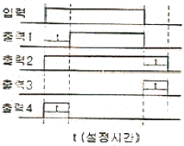
- 컴파일러
- 운영체제
- 스풀러
- 매크로
(정답률: 알수없음)
3과목: 자동제어
41. PLC의 온딜레이 타이머(on Delay Timer)출력 파형은?
- 출력1 파형
- 출력2 파형
- 출력3 파형
- 출력4 파형
(정답률: 알수없음)
42. RS 플립플롭(Flip-Flop)에서 세트(s) 입력에 O, 리세트(R) 입력에 1을 입력하면 출력(Q)는?
- 이전상태 유지
- Low(O)
- High(1)
- 불확실
(정답률: 알수없음)
43. 다음 중에서 프로그램 로더의 주요 기능이 아닌 것은?
- 프로그램 입력
- 전원 안정화
- 프로그램 모니터링
- 프로그램 편집
(정답률: 알수없음)
44. 다음 그림의 래더다이어그램을 논리회로로 변환한 것은?
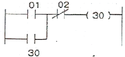
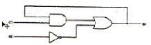
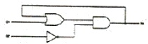
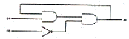
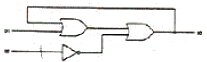
(정답률: 알수없음)
45. 다음 부울 대수식에서 틀린 것은?
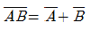
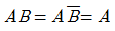
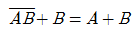
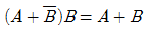
(정답률: 알수없음)
46. 제어용 각종 기기 중에서 주 회로의 단락사고 등에 의한 과전류로 부터 회로를 보호하는 장치로 사용되는 것은?
- 카운터
- 타이머
- 배선용 차단기
- 릴레이
(정답률: 알수없음)
47. 다음 그림의 전달함수 (C/R)로 맞는 것은?
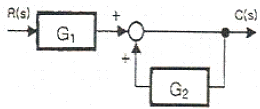
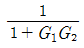
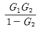
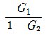
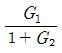
(정답률: 알수없음)
48. PLC의 스캔 타임(scan time)에 관한 설명으로 옳은 것은?
- 프로그램을 1회 실행하는데 소요되는 시간
- 입력모듈이 외부 입력을 받는데 소요되는 시간
- 출력모듈이 외부 출력을 보내는데 소요되는 시간
- 하나의 입력이 하나의 출력에 전달되는 시간
(정답률: 알수없음)
49. PLC의 입력 스위치로 사용할 수 없는 것은?
- 푸시버튼
- 근접 스위치
- 솔레노이드
- 초음파 스위치
(정답률: 알수없음)
50. 다음 그림은 RS-232C 핀의 모양이다. 터미널 및 PC로부터 데이터를 전송하는 기능을 갖는 핀은 몇 번인가?
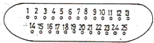
- 1번 핀
- 2번 핀
- 3번 핀
- 4번핀
(정답률: 알수없음)
51. 2진수 101010을 10진법으로 표시하면?
- 32
- 42
- 52
- 62
(정답률: 알수없음)
52. 응답이 최초로 목표 값의 50%에 도달하는데 소요되는 시간은?
- 상승시간
- 정정시간
- 지연시간
- 응답시간
(정답률: 알수없음)
53. 다음 중 PLC 메모리부에 대한 설명으로 올바르지 않는 것은?
- 사용자 프로그램은 RAM에 보존된다.
- PLC를 동작시키는 시스템 프로그램은 ROM에 존재한다.
- EP-ROM에 쓰기(write)된 프로그램은 소거할 수 없다.
- 정전이 발생하였을 때 프로그램의 내용을 지속적으로 보전하기 위해서는 전지를 사용해야 한다.
(정답률: 알수없음)
54. 시정수의 값은 1차 시스템에서 입력 스텝 함수에 대한 출력 변화가 전체 변화량의 약 몇 [%]에 이를 때까지의 시간인가?
- 26
- 30
- 63
- 70
(정답률: 알수없음)
55. 10진수 63을 나타낸 것 중 틀린 것은?
- 16진수로 3F
- 8진수로 77
- 2진수로 111101
- 32진수로 2100
(정답률: 알수없음)
56. 다음 제어기 중 성격이 다른 하나는?
- 컴퓨터 기반 제어
- 서보모터 기반 제어
- PLC기반 제어
- 마이크로프로세서 기반 제어
(정답률: 알수없음)
57. 다음 그림과 같은 블록선도에서 등가변환된 전달함수 [G(S)/R(S)]은?
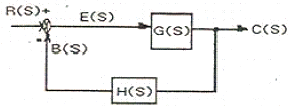
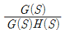
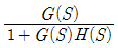
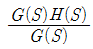
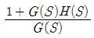
(정답률: 알수없음)
58. 자동제어의 장점에 대한 설명이 아닌 것은?
- 생산 속도를 감소시킨다.
- 품질향상과 균일화에 기여 한다.
- 인간이 직접하기 어려운 작업까지도 가능하다.
- 양질의 제품을 신속, 대량으로 생산 가능하다.
(정답률: 알수없음)
59. 3e-5t를 라플라스 변환하면?
- 15S
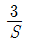
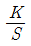
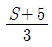
(정답률: 알수없음)
60. 상수 K를 라플라스 변환한 값은?
- K
- K2
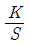
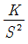
(정답률: 알수없음)
4과목: 메카트로닉스
61. 컨베이어를 이용한 자동화시스템을 설계하고자 할 때 기본 설계원칙에 해당되지 않는 것은?
- 속도의 원칙
- 이송능력한계
- 투입 산출의 원칙
- 균일성의 원칙
(정답률: 알수없음)
62. 입력신호에 의해 출력이 발생되면 그 입력신호가 없어져도 출력 상태를 유지하는 방식은?
- 파일럿 제어
- 메모리 제어
- 조합 제어
- 시퀀스 제어
(정답률: 알수없음)
63. 자동화를 하는 중요한 이유가 아닌 것은?
- 생산성 향상
- 안전성
- 제품품질의 개선
- 생산리드 타임의 증가
(정답률: 알수없음)
64. 열전대를 부착하는 방법과 측정하는 방법에 따라 발생할 수 있는 오차가 아닌 것은?
- 측온체의 방사열에 의한 오차
- 기준접점 일치에 의한 오차
- 보호관의 지름, 충전물의 유무, 소선 지름에 의한 오차
- 보호관 주변 외란에 의한 오차
(정답률: 알수없음)
65. 다음 검출용 기기중 구조가 간단하며, 접촉식 스위치의 대표적인 것은?
- 광전 스위치
- 리밋 스위치
- 초음파 스위치
- 근접 스위치
(정답률: 알수없음)
66. 그림과 같이 실린더의 안지름이 20mm이고, 로드의 지름이 6mm인 편로드 공압 복동 실린더에서 전진할 때의 최대 출력은 약 몇 kgf인가? (단, 공기의 압력은 6kgf/cm2, 효율은 90%이다.)
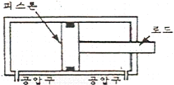
- 17
- 19
- 21
- 34
(정답률: 알수없음)
67. 변위 단계 선도(displacement step diagram)에 대한 설명으로 옳은 것은?
- 단순한 논리 연결을 표현한다.
- 순차제어에서 시간에 대한 정보를 제공한다.
- 스텝에 따른 작업요소의 작동순서를 표현한다.
- 플래그, 카운터, 타이머의 기능을 가지고 있다.
(정답률: 알수없음)
68. 제어 정보 표시 형태에 의한 시스템의 분류에 속하지 않는 것은?
- 2진 제어계
- 디지털 제어계
- 아날로그 제어계
- 10진 제어계
(정답률: 알수없음)
69. 다음 진리값은 어떤 논리동작을 나타내는가?
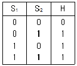
- AND 논리
- OR 논리
- NOT 논리
- ANDNOT 논리
(정답률: 알수없음)
70. PLC의 시스템 구축시 문제가 발생하였을 때 다음 조치 사항 중 틀린 것은?
- 배터리 전압이 저하된 경우 배터리를 교환한다.
- 입출력 모듈의 휴즈가 끊어진 경우는 휴즈를 교환한다.
- CPU가 해독 불가능한 명령이 포함된 경우는 틀린 명령을 수정한다.
- 최대 실장이 가능한 입출력 모듈의 개수가 정해진 수량을 초과한 경우 프로그램의 스텝수를 줄인다.
(정답률: 알수없음)
71. 액추에이터를 설계하거나 선정할 때는 충분한 검토를 거쳐야 한다. 다음 중 잘못된 사항은?
- 회전운동으로 일어나는 관성의 상호 역학적 관계를 잘 파악한다.
- 기계 전체의 역학적인 밸런스를 감안해야 한다.
- 경험에 의한 운동 조건을 추정하여 결정한다.
- 설계식을 면밀히 검토해서 합리적인 수치를 구한다.
(정답률: 알수없음)
72. 8bit의 AD변환기로 표현할 수 있는 범위는 몇 가지 인가?
- 32
- 64
- 128
- 256
(정답률: 알수없음)
73. 다음 공압 실린더 중 비피스튼형이며 마찰이 적고, 행정이 짧은 실린더는?
- 램형 실린더
- 다이어프램 실린더
- 탠덤형 실린더
- 텔레스코프형 실린더
(정답률: 알수없음)
74. 다음 중 모든 시간에 대하여 정보의 양이 연속적인 것은?
- 이진 신호
- 이산 신호
- 디지털 신호
- 아날로그 신호
(정답률: 알수없음)
75. 다음의 센서 중 온도센서에 해당하는 것은?
- 리드 스위치
- PTC
- 홀 소자
- 스트레인 게이지
(정답률: 알수없음)
76. 픔프에서 소음이 나는 원인이 아닌 것은?
- 펌프의 흡입불량
- 공기의 침입
- 이물질 침입
- 장시간 고압에서 사용하여 작동유 과열
(정답률: 알수없음)
77. 제어시스템 중 제어 프로그램에 의해 미리 결정된 순서대로 제어신호가 출력되는 순차적인 제어 시스템은?
- 2진 제어계
- 동기 제어계
- 논리 제어계
- 시퀀스 제어계
(정답률: 알수없음)
78. 4개의 입력요소 중 첫 번째와 두 번째 요소가 함께 작동되던지 세번째 요소가 작동되지 않은 상태에서 네 번째 요소가 작동 되었을 때 출력이 존재하는 제어기의 구성을 논리적으로 표현한 것은?
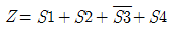
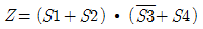
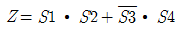
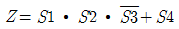
(정답률: 알수없음)
79. 플로우 차트를 작성할 때 다음 기호가 의미하는 것은?
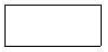
- 단자, 시작 또는 끝 표시
- 처리, 일반적인 동작 표시
- 분지, 예/아니오 등 선택
- 입력이나 출력
(정답률: 알수없음)
80. 공압 선형액추에이터 중 단동 실린더가 아닌 것은?
- 피스톤 실린더
- 격판 실린더
- 벨로스 실린더
- 케이블 실린더
(정답률: 알수없음)